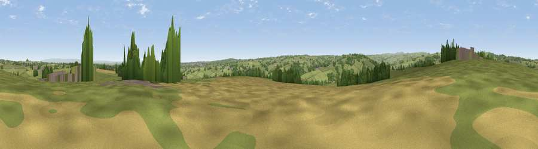

Viewpoint near Birstwith
#24155 in England · top 46% of its area beats it · near BirstwithThe view, rendered

A 360° render of this exact spot computed from the terrain model, tree cover and land cover — summer colours, afternoon light, calibrated against photographs of famous viewpoints. Real trees, hedges and buildings will differ in detail.
The panorama
Grey silhouette: terrain skyline in each direction (720 bearings, Earth curvature and refraction included). Dashed green: skyline with trees (+15 m) and buildings (+8 m) as obstacles. Blue strip: how far the ground is visible on each bearing.
Where the view opens
Wedge length = distance to the farthest visible ground on that bearing (vegetation-aware). Rings at 10, 25 and 50 km.
What fills the view
73% grassland · 13% woodland · 11% cropland · 2% built-up
Angular shares of the visible panorama (visual magnitude), not map area. Landscape diversity 0.36 (0–1 Shannon).
Key numbers
More beautiful places nearby
The staircase of upgrades: each row has a higher view potential than everything closer. Driving times are estimates from straight-line distance, calibrated against real road routing — check an actual route before setting out.
| Place | Direction | Drive | Score |
|---|---|---|---|
| Viewpoint near Birstwith | WSW · 3 km | ~7 min | 51.3 |
| Viewpoint near Hampsthwaite | SSE · 4 km | ~9 min | 54.2 |
| Viewpoint near Summerbridge | NW · 5 km | ~12 min | 66.0 |
| Viewpoint near Low Laithe | NW · 6 km | ~13 min | 66.1 |
| How Hill | NNE · 7 km | ~14 min | 72.9 |
| Viewpoint near Bewerley | WNW · 13 km | ~24 min | 75.7 |
| Viewpoint near Bewerley | WNW · 13 km | ~24 min | 76.8 |
| Viewpoint near Otley | SSW · 17 km | ~30 min | 77.5 |
54.04277, -1.61170 · source: screening · position refined by local search. Computed location — check access rights before visiting.